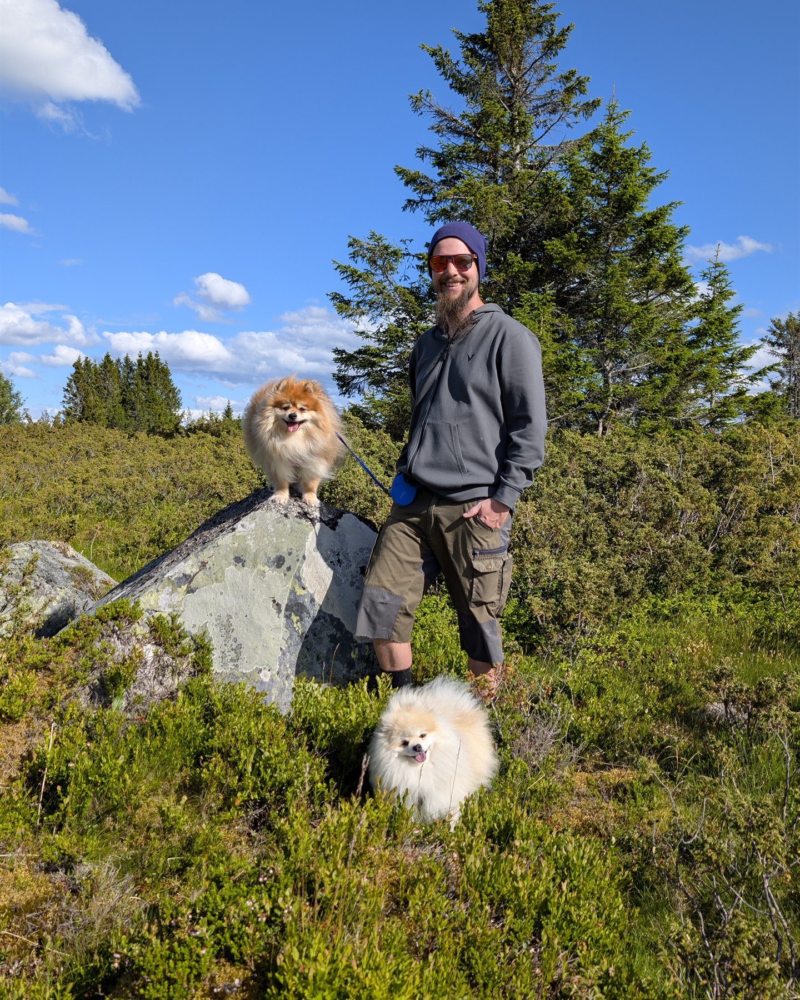

Virkelige møter
Egne opptak og fotografier holder dyrene i sentrum – enten de lever i samlingen eller ble møtt ute i naturen.
Bak Kryp & Krabater
Et prosjekt om norsk natur og dyrene i min egen samling.

Møt skaperen
Jeg står bak Introvertebrates og Kryp & Krabater. Jeg holder og fotograferer en rekke spennende dyr – fra edderkopper og insekter til skilpadden Sonja – og bruker egne bilder, videoer og observasjoner til å vise hvordan dyr faktisk lever og oppfører seg.
Kryp & Krabater ble laget for å gi barn og voksne lyst til å se nærmere på dyrene rundt oss, også dem som ofte blir oversett, misforstått eller oppfattet som litt skumle. Her skal nysgjerrighet, naturglede og kunnskap få gå hånd i hånd.
Dyret kommer alltid først. Målet er å vise ekte møter på en rolig, tydelig og respektfull måte.
Dyrene, fotografiene, videoene, observasjonene og de endelige valgene er mine. Kunstig intelligens brukes som hjelp til utkast, struktur, bildearbeid og teknisk utvikling. Fakta og innhold blir kontrollert før publisering.

Møt guiden din
Jeg hjelper deg med å finne små detaljer, stille gode spørsmål og velge hvilket dyrespor du vil følge videre. Se etter tips fra meg når det er noe ekstra spennende å legge merke til.
Tina er en illustrert guide. Dyrene, fotografiene og observasjonene på sidene er ekte – og det er alltid de virkelige dyrene som står i sentrum.
Laget for unge seere
Kryp & Krabater er først og fremst norskspråklig. Språket, tempoet og fortellingene skal gjøre dyr og natur tilgjengelig for barn uten å forenkle bort det som gjør dyrene spennende.
Egne opptak og fotografier holder dyrene i sentrum – enten de lever i samlingen eller ble møtt ute i naturen.
Gift, rovdyr, uvante kroppsformer og dyreatferd forklares uten å gjøre dem til skremsler.
Hver fortelling skal gi mer oppmerksomhet til hagen, fjæra, skogen, fjellet eller dyrene som finnes nær hjemmet.
To prosjekter med samme utgangspunkt
Begge prosjektene blir laget av Erlend med egne fotografier, videoopptak og observasjoner som utgangspunkt.
Kryp & Krabater er den norskspråklige barnekanalen med hovedvekt på norsk natur og dyreliv. Egne dyr fra samlingen gir nære møter og ekstra spor å følge.
Introvertebrates er den engelskspråklige fordypningen med den nåværende samlingen i sentrum, sammen med artsprofiler, observasjoner fra dyrehold, fotografi og interessant edderkoppforskning.
English summary: Kryp & Krabater focuses on Norwegian nature and wildlife for curious children, complemented by close encounters with animals from the Introvertebrates collection.